Mosquitoes
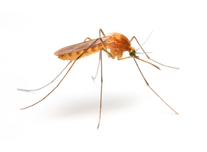
One of the best known summer pests, mosquitoes breed in stagnant water or soft soil and can develop from egg to adult in 10 to 14 days.
Carpenter Bees
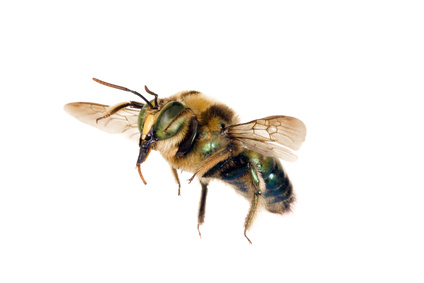
Carpenter bees look like typical bumblebees but often lack yellow stripes. They are solitary bees.
Bed Bugs
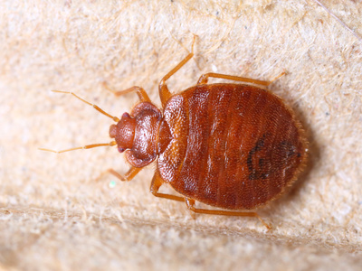
The adult bed bug is oval and flat. They grow to only about a quarter of an inch long. Bed bugs lack wings, so you won`t see them flying around your bedroom. Under cover of darkness, they crawl in search of blood, preferably from a human. Bed bugs use a piercing, sucking proboscis to penetrate the skin of their host. Adults are brown, but appear reddish-brown when engorged with blood. For more information, contact us today.
Ticks
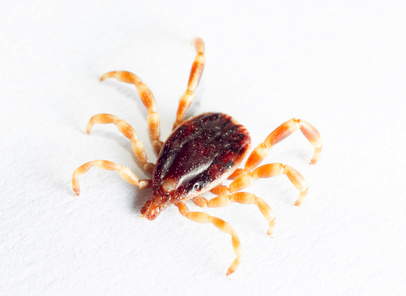
Tick is the common name for the small arachnids in superfamily Ixodoidea that constitute the Acarina. Ticks are ectoparasites (external parasites), living by hematophagy on the blood of mammals, birds, and occasionally reptiles and amphibians.
Fleas
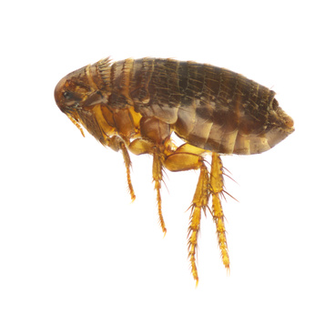
Fleas are parasites that feed on the blood of any warm-blooded body. The most common species is the cat flea, which often feasts on cats, dogs and humans.
Ants
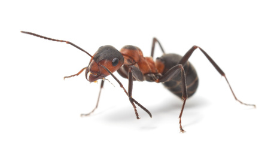
Ants are social insects of the family Formicidae that belong to the order Hymenoptera. They are easily identified by their elbowed antennae and a distinctive node-like structure that forms a slender waist.
Crickets
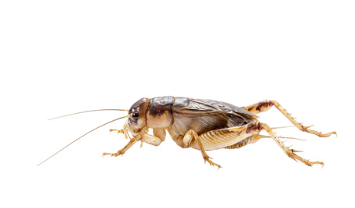
House crickets get their common name from the fact that they often enter houses where they can survive indefinitely. Interestingly, they are known for their loud chirping which is caused by rubbing their front wings together to attract females.
Cockroaches
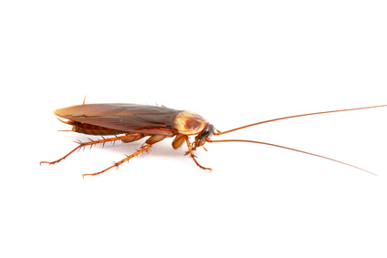
Cockroaches are insects of the order Blattaria. There are about 4,500 species of cockroach, of which 30 species are associated with human habitations and about four species are well known as pests.
Silverfish
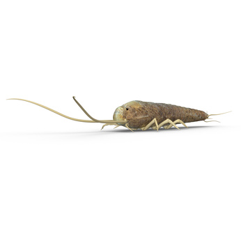
Silverfish are white to brown-grey or bluish-silver in color and are teardrop-shaped insects that measure up to 12-19 mm in length. Three long bristles are on their rears. Most often, homeowners detect silverfish when they find one on the floor or in a sink or bathtub. Their feeding damage also can indicate their presence, along with their tiny pepperlike feces.
Carpenter Ants
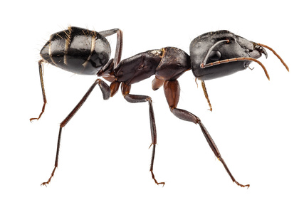
Carpenter ants get their name because they excavate wood in order to build their nests. Their excavation results in smooth tunnels inside the wood. Carpenter ants range in size from one-quarter inch for a worker ant to up to three-quarters inch for a queen.
Subterranean Termites
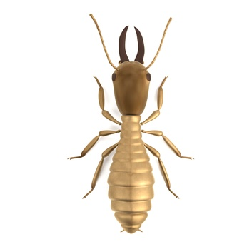
Subterranean termites live in underground colonies or in moist secluded areas aboveground that can contain up to 2 million members. They build distinctive "mud tubes" to gain access to food sources and to protect themselves from open air.
Wasps
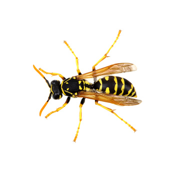
The appearance of a wasp varies tremendously depending on species. Most have two pair of wings and a pinched waist. They range in colors from black to metallic greens and blues and vary in size from almost microscopic to several centimeters long.
Hornets
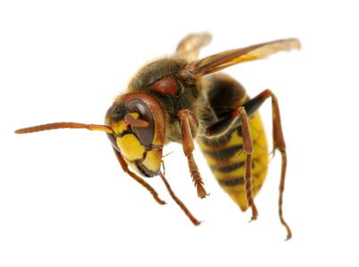
While hornets are known for their ability to inflict a painful sting, they are very beneficial predators and help to control a variety of insects that could otherwise become pests. However, hornets are social insects, so they will aggressively defend their colony (nest) from any intruders.